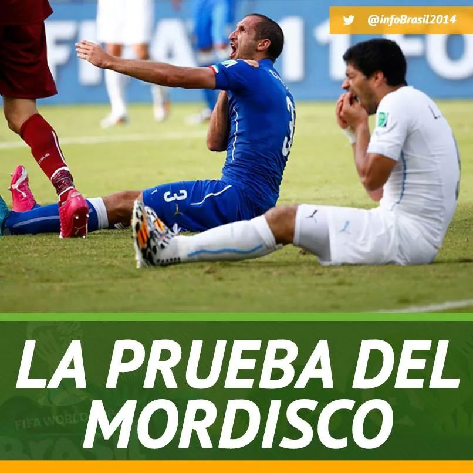
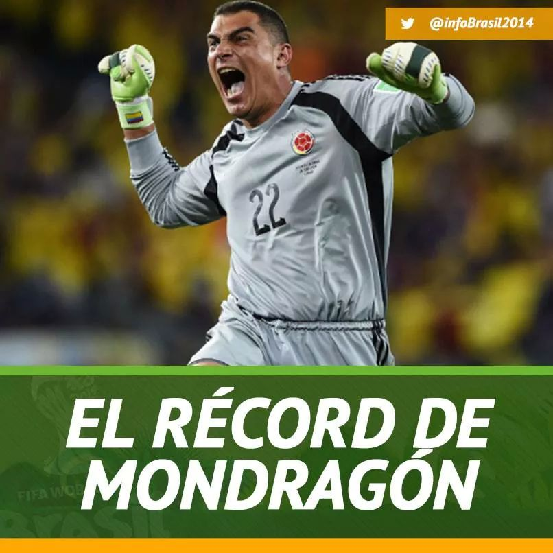
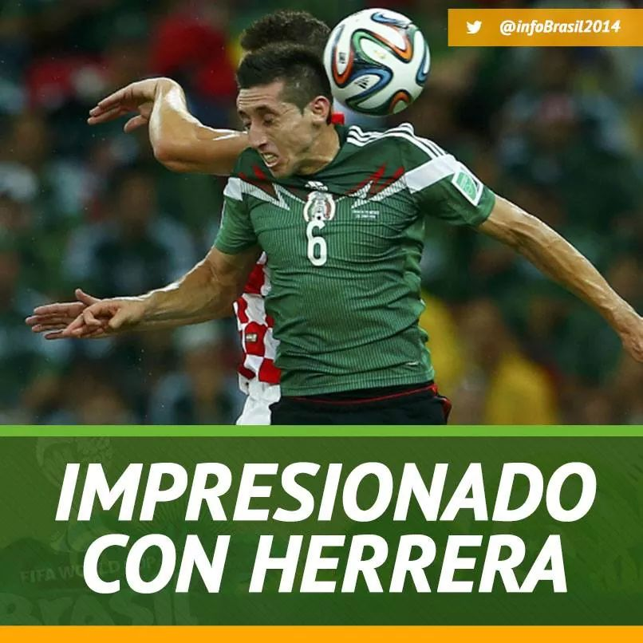
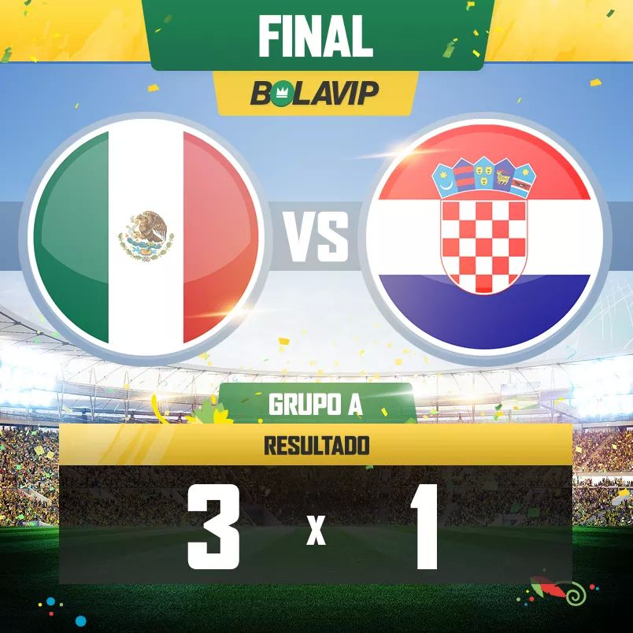

Noticias Recientes
| Fecha | Noticia | Foto |
| 25 de junio |
La FIFA se encuentra en una encruzijada al no decidir que castigo se le dará al delantero Luis Suárez (Uruguay) al propinar una mordida en el hombro a Marcos Chiellini (Italia) en el partido en el que la garra charrua eliminó a la escuadra azurri del mundial. el comité de la FIFA está dispuesto a utilizar los videos del partido en diferentes ángulos para verificar las acciones de ambos jugadores, se habla de un castigo desde expulsarlo del mundial hasta negarle cualquier actividad con la selección uruguaya en dos años |
 |
| 23 de junio |
Las polémicas declaraciones de ambas escuadras (México y Croacia) en el momento no calificadas a octavos acerca del otro equipo calentaron los ánimos entre los aficionados aún antes de que el partido comenzara, pero la bomba explotó cuando el capitán mexicano Rafael Márquez proyectara con la cabeza un balonazo proveniente de un tiro de esquina que movió las redes del portero croata, la afición mexicana celebró como nunca y todo esto llevó a una pelea en las tribunas, primero entre aficionados mexicanos y croatas y después los cuerpos de seguridad se vieron incluidos en la trifulca, afortunadamente no se registraron heridos de gravedad |
|
| 24 de junio |
Se ha roto otra marca en el mundial de Brasil 2014, esta vez fué el portero colombiano Mondragón, quien al entrar como cambio por una molestia muscular del portero titular en el partido contrar Japón, se ha convertido en el jugador más veteranos en la historia de los mundiales de la FIFA, con 43 años cumplidos, este portero pasa a la historia |
 |
| 23 de junio |
Hector Herrera hoy por hoy es un jugador más que indispensable en el cuadro titular del Piojo Herrera por su gran técnica y velocidad, y esto se ha notado en los 3 partidos que Herrera ha disputado en el mundial de Brasil y deja buen sabor de boca que grandes jugadores reconozcan la integridad de este jugador. Actualmente militando en el Porto (Liga portuguesa) ha sido recomendado por Rio Ferdinand ante los directivos del Manchester United (Inglaterra) para unirlo a la escuadra de los devils |
 |
| 23 de junio |
El mundial no sóolo se trata de los jugadores, el cuerpo técnico tambien influye en los resultados del marcador y esto lo ha demostrado el "Piojo" Herrera, director técnico de la selección mexicana, quien con gran efusividad alienta a sus jugadores a ir por más goles, y de la misma manera sus reclamos son enormes ante injusticias como contra Camerún o Croacia, donde se dieron goles anulados y penales no marcados contra su escuadra. Nada como la pasión y la confianza que un director técnico puede dar a sus jugadores |
 |
| 23 de junio |
La selección mexicana de futbol ha dado un gran paso en el mundial a entrar a octavos de final ante una Croacia despechada por haber sido apaleada por quien consideraban "déebiles", la afición se prendió, el estadio se simbró, el Piojo se emociono y México celebró este contudente resultado de 3 - 1, el cuál dejó eliminada a la escuadra croata. México se clasificó como segundo lugar del grupo A y se enfrentará a los Países Bajos (Holanda) en la ronda de octavos de final |
 |